Fichas de lectura – 7.º grado (1.º de ESO)
138 recursos de Fichas de lectura para 7.º grado (1.º de ESO), listos para imprimir: Trojanisches Pferd, Torre de televisión de Berlín, Streik, Sozialdemokratie y más. Cada ficha muestra el nivel, el número de páginas y una vista previa, y enlaza directamente al producto en TpT.
138 recursos
Trojanisches Pferd – Ficha de lectura: texto con huecos, comprensión auditiva y sopa de letras
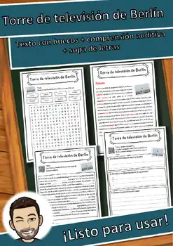
Torre de televisión de Berlín – Ficha de lectura: texto con huecos, comprensión auditiva y sopa de letras
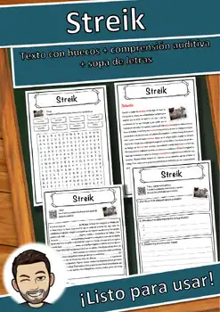
Streik – Ficha de lectura: texto con huecos, comprensión auditiva y sopa de letras
Sozialdemokratie – Ficha de lectura: texto con huecos, comprensión auditiva y sopa de letras
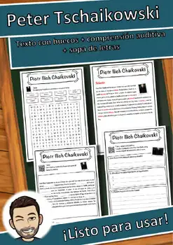
Peter Tschaikowski – Ficha de lectura: texto con huecos, comprensión auditiva y sopa de letras
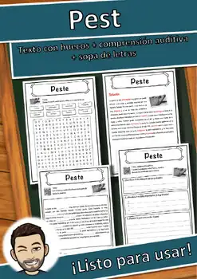
Pest – Ficha de lectura: texto con huecos, comprensión auditiva y sopa de letras
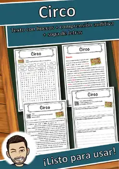
Circo – Ficha de lectura: texto con huecos, comprensión auditiva y sopa de letras
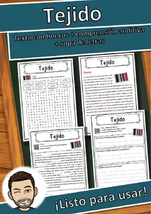
Tejido – Ficha de lectura: texto con huecos, comprensión auditiva y sopa de letras
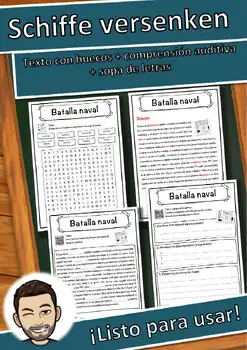
Schiffe versenken – Ficha de lectura: texto con huecos, comprensión auditiva y sopa de letras
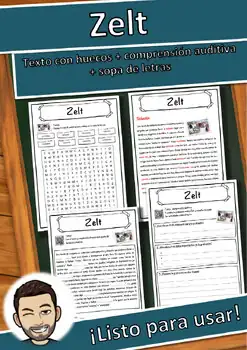
Zelt – Ficha de lectura: texto con huecos, comprensión auditiva y sopa de letras
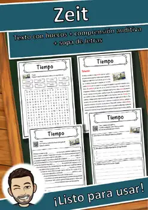
Zeit – Ficha de lectura: texto con huecos, comprensión auditiva y sopa de letras
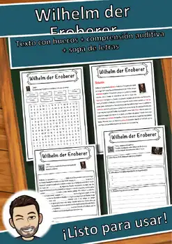
Wilhelm der Eroberer – Ficha de lectura: texto con huecos, comprensión auditiva y sopa de letras
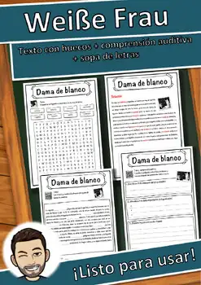
Weiße Frau – Ficha de lectura: texto con huecos, comprensión auditiva y sopa de letras
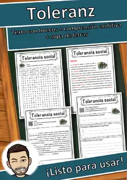
Toleranz – Ficha de lectura: texto con huecos, comprensión auditiva y sopa de letras
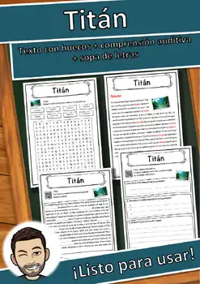
Titán – Ficha de lectura: texto con huecos, comprensión auditiva y sopa de letras
Strand – Ficha de lectura: texto con huecos, comprensión auditiva y sopa de letras
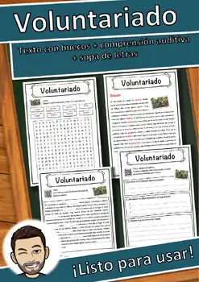
Voluntariado – Ficha de lectura: texto con huecos, comprensión auditiva y sopa de letras
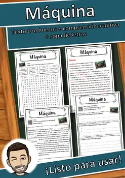
Máquina – Ficha de lectura: texto con huecos, comprensión auditiva y sopa de letras
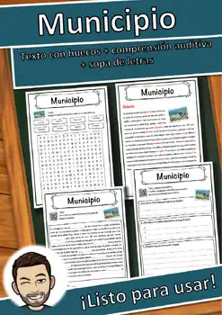
Municipio – Ficha de lectura: texto con huecos, comprensión auditiva y sopa de letras
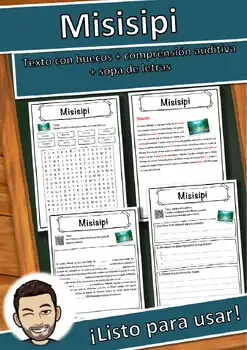
Misisipi – Ficha de lectura: texto con huecos, comprensión auditiva y sopa de letras
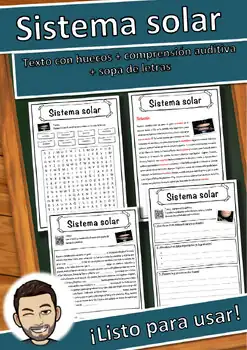
Sistema solar – Ficha de lectura: texto con huecos, comprensión auditiva y sopa de letras
Silesia – Ficha de lectura: texto con huecos, comprensión auditiva y sopa de letras
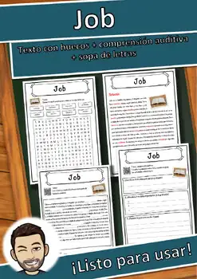
Job – Ficha de lectura: texto con huecos, comprensión auditiva y sopa de letras
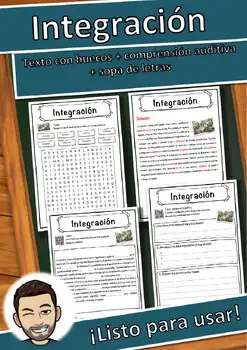
Integración – Ficha de lectura: texto con huecos, comprensión auditiva y sopa de letras
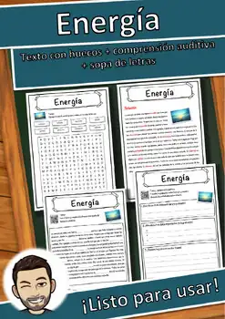
Energía – Ficha de lectura: texto con huecos, comprensión auditiva y sopa de letras
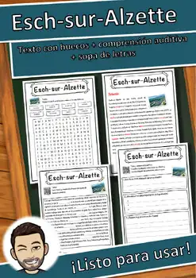
Esch-sur-Alzette – Ficha de lectura: texto con huecos, comprensión auditiva y sopa de letras
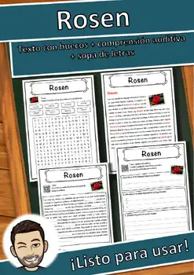
Rosen – Ficha de lectura: texto con huecos, comprensión auditiva y sopa de letras
Restaurante – Ficha de lectura: texto con huecos, comprensión auditiva y sopa de letras
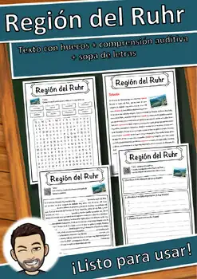
Región del Ruhr – Ficha de lectura: texto con huecos, comprensión auditiva y sopa de letras
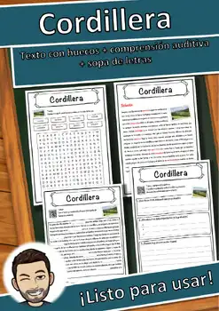
Cordillera – Ficha de lectura: texto con huecos, comprensión auditiva y sopa de letras
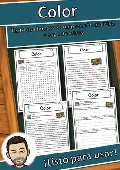
Color – Ficha de lectura: texto con huecos, comprensión auditiva y sopa de letras
Colonia administrativa – Ficha de lectura: texto con huecos, comprensión auditiva y sopa de letras
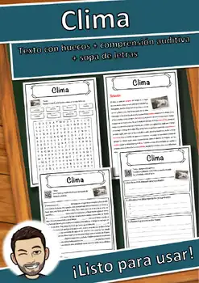
Clima – Ficha de lectura: texto con huecos, comprensión auditiva y sopa de letras
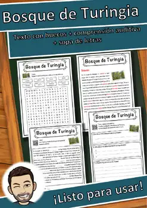
Bosque de Turingia – Ficha de lectura: texto con huecos, comprensión auditiva y sopa de letras
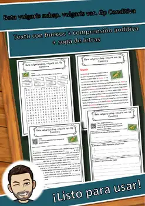
Beta vulgaris subsp. vulgaris var. Gp Conditiva – Ficha de lectura: texto con huecos, comprensión auditiva y sopa de letras
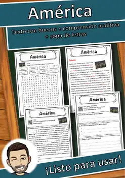
América – Ficha de lectura: texto con huecos, comprensión auditiva y sopa de letras
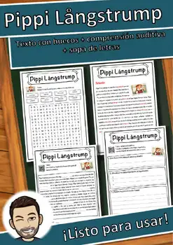
Pippi Långstrump – Ficha de lectura: texto con huecos, comprensión auditiva y sopa de letras
Paz de Westfalia – Ficha de lectura: texto con huecos, comprensión auditiva y sopa de letras
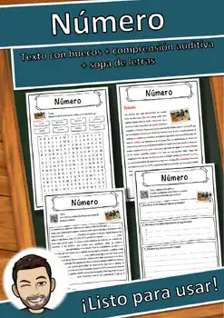
Número – Ficha de lectura: texto con huecos, comprensión auditiva y sopa de letras
National Basketball Association – Ficha de lectura: texto con huecos, comprensión auditiva y sopa de letras
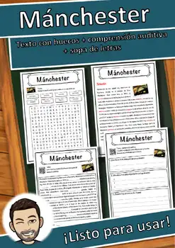
Mánchester – Ficha de lectura: texto con huecos, comprensión auditiva y sopa de letras
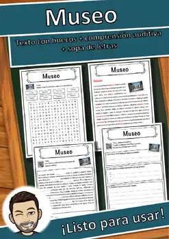
Museo – Ficha de lectura: texto con huecos, comprensión auditiva y sopa de letras
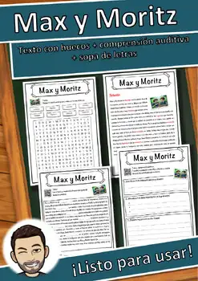
Max y Moritz – Ficha de lectura: texto con huecos, comprensión auditiva y sopa de letras
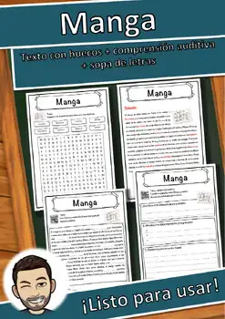
Manga – Ficha de lectura: texto con huecos, comprensión auditiva y sopa de letras
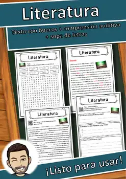
Literatura – Ficha de lectura: texto con huecos, comprensión auditiva y sopa de letras
Ley Fundamental para la República Federal de Alemania – Ficha de lectura: texto con huecos, comprensión auditiva y sopa de letras
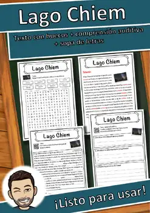
Lago Chiem – Ficha de lectura: texto con huecos, comprensión auditiva y sopa de letras
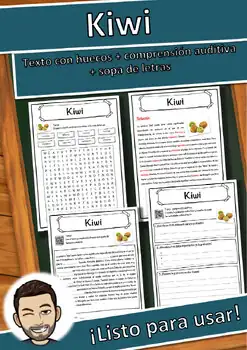
Kiwi – Ficha de lectura: texto con huecos, comprensión auditiva y sopa de letras
No se encontraron recursos. Prueba con otra palabra o con otro filtro.